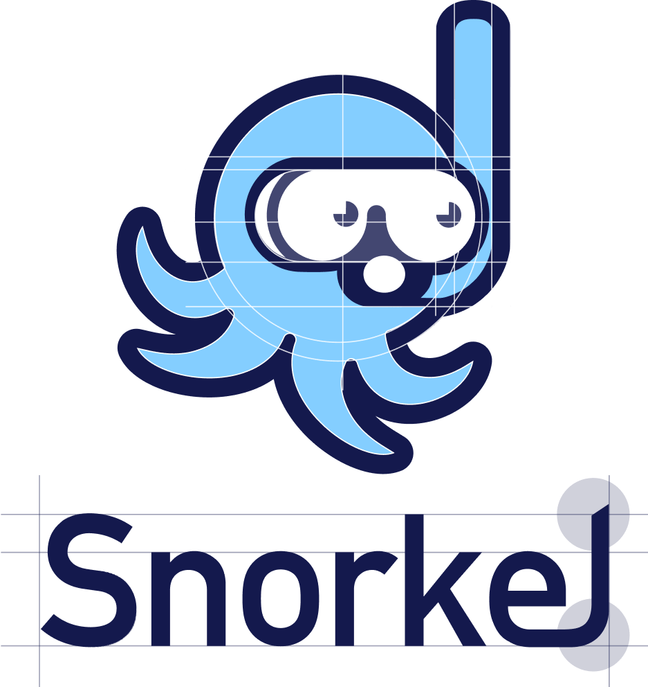
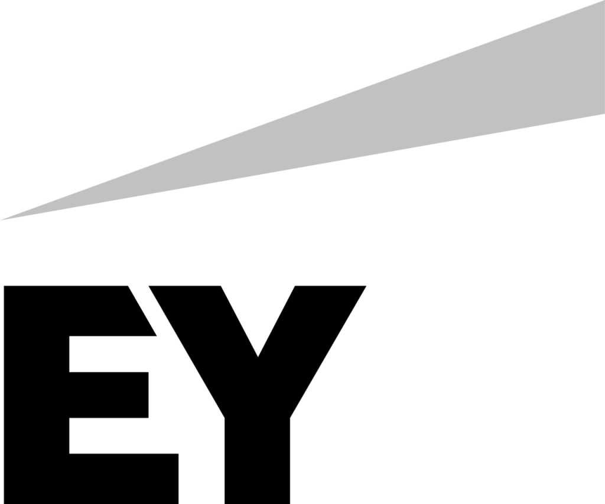
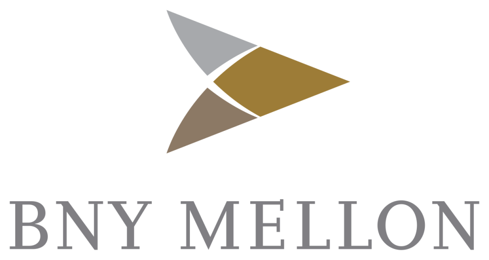
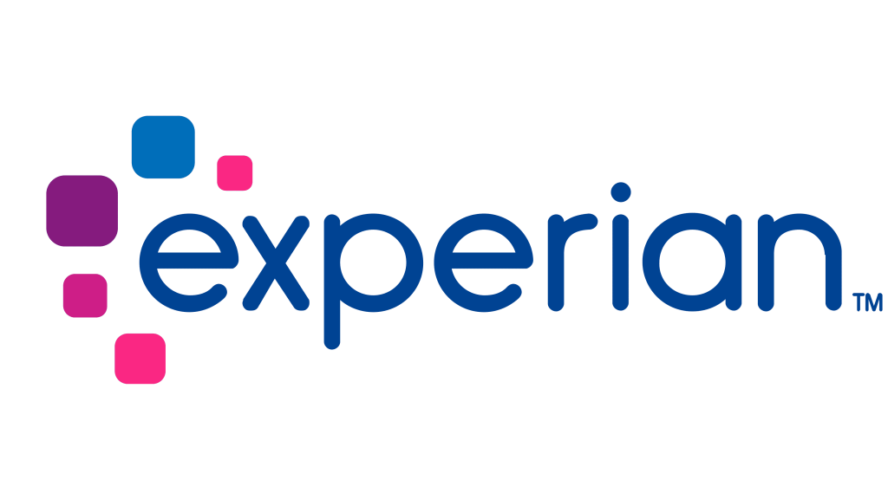

I’m a Member of Technical Staff at OpenAI, working on agent post-training. I contribute to the GPT-5.x and GPT-6-Astra series, with a focus on agentic reinforcement learning, knowledge work, and writing.
Previously, I was a Senior Research Scientist at Snorkel AI, where I worked on LLM alignment and helped enterprises build AI systems. I led the development of Snorkel-Mistral-PairRM-DPO, a pioneering open-source project in iterative preference optimization. Our submission ranked second on AlpacaEval 2.0 in January 2024, ahead of Claude 2 and Gemini Pro.
My work
Agentic RL / Knowledge work / Writing
Selected Experience
NOV 2024 — PRESENT
OpenAI Member of Technical Staff
Agent post-training for the GPT-5.x and GPT-6-Astra series, focusing on agentic reinforcement learning, knowledge work, and writing. I joined OpenAI in November 2024.
JUN 2021 — NOV 2024

Snorkel AI Senior Research Scientist
Split my time between LLM research and working directly with enterprise customers. My research focused on preference alignment, agentic workflows, and guardrails; my applied work involved designing performant, scalable systems around customers’ data and requirements.
AUG 2019 — NOV 2020
Vizly Co-founder
Built a platform to understand clients’ design preferences using quick reactions and AI attention prediction. Vizly participated in the Mozilla Foundation’s Spring 2020 Fix-the-Internet Incubator.
Earlier work in AI, products & behavioral research
Fujitsu AI Labs
Developed graph neural network models and contributed to an internal AI platform.
DeepCore · SoftBank’s AI startup fund
Built an AI meeting summarizer that produced notes, action items, and meeting minutes.
Pictory AI
Designed text summarization for integration with image search.
Minerva University
Conducted behavioral research with the Head of Social Sciences and presented findings at the AAC&U Conference in 2021.
Microsoft, VNG & Kakao
Worked on employee engagement strategies, user behavior and purchase workflows, and a platform encouraging social responsibility.
Selected research
MODELS, DATA & ALIGNMENT
Most of my research is internal, focused on improving model capabilities and taste. Below is a selection of my public work.
Our 7B model with best-of-16 reranking placed second behind GPT-4 Turbo. Historical, non-length-controlled win rates; the snapshot shows the result reported in Snorkel’s January 24, 2024 announcement.
This work contributed to the early wave of iterative preference optimization, which motivates later waves of much improved versions like:
SimPO: Simple Preference Optimization with a Reference-Free Reward(Meng et al., 2024) explicitly follows our preference-data generation recipe: sample five responses, rank them with PairRM, and select the highest- and lowest-scoring pair. SimPO uses a single pass rather than repeated iterations.
Self-Play Preference Optimization(Wu et al., 2024) explicitly follows our experimental setup, including the base model, prompt splits, and PairRM preference model.
2023
Data curation for RedPajama-Chat
First-author collaboration with Together AI on RedPajama-Chat-Curated. We explored how better training-data mixtures could improve model performance while using less data—part of my broader work on data quality as a way to improve language models.
Working with enterprise teams taught me that strong model performance is only one part of a useful system. Data quality, evaluation, retrieval, and the surrounding workflow all matter.
I help teams move from an AI idea to practical experiments and implementation. That work includes solution design, LLM customization, retrieval, and agentic workflows.
Selected companies I’ve consulted with (prior to OpenAI)



Talks & teaching
SHARING WHAT I LEARN
I have presented my research to both technical and enterprise audiences. In my free time, I teach LLM alignment at VietAI, a nonprofit empowering students in Southeast Asia, and design AI curricula with Dr. Thang Luong of Google DeepMind.